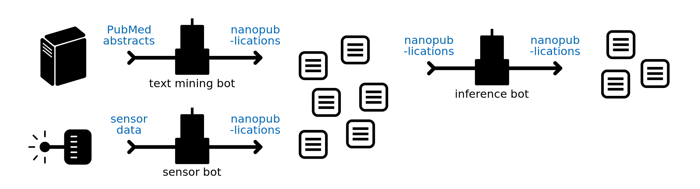
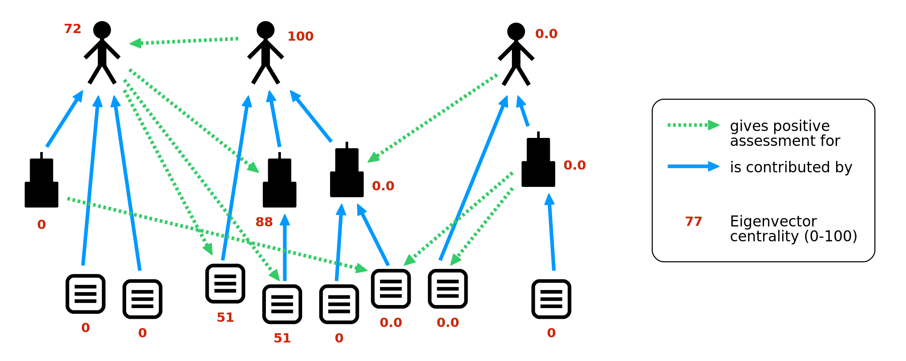
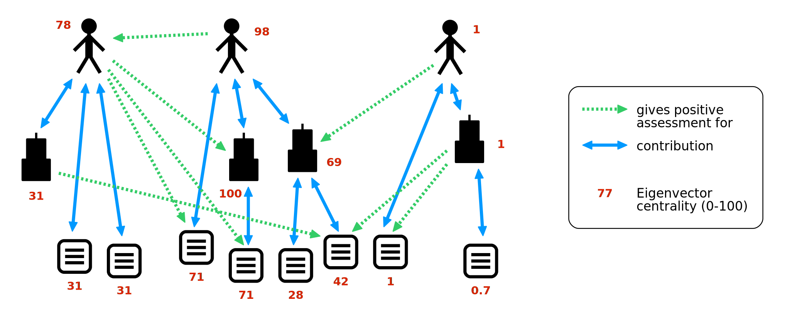
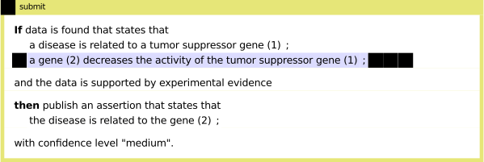

As a response to the trends of the increasing importance of computational approaches and the accelerating pace in science, I propose in this position paper to establish the concept of "science bots", i.e. autonomous agents that perform some computational task of scientific relevance. Such bots are small independent pieces of software that look for a particular kind of input and apply a specific, programmed task on it (e.g. tagging images, text mining, logical inferences, fixing mistakes) without further interaction with their creators. Such bots already exist, for example, in Wikipedia and Twitter, but in my view they have not been given the attention they deserve to advance science. To deal with low-quality data, which is inevitable in an open and decentralized system, we can let bots participate in a reputation system together with human users, meaning that bots and humans get positive or negative feedback by other participants with respect to the quality of their contributions. Positive reputation given to these bots would also shine on their owners, motivating them to contribute to this system, while negative reputation will allow us to filter out low-quality data. Using building blocks provided by others and domain-specific intuitive interfaces, even non-technically oriented researchers could create their own bots. In this way, science bots could become an important tool to deal with the increasing pervasiveness and sophistication of data and algorithms in science.
As datasets become increasingly important in all branches of science, many have advocated and proposed standards and tools to publish data , and conventions of how to link them to narrative scientific articles. Nanopublications are an approach to bundle atomic data snippets (in RDF) in small packages together with their provenance and metadata. Such nanopublications can be manually created by scientists and linked to their articles, but they can also be automatically extracted from existing datasets or be directly created by programs that implement scientific methods.
In general, computer programs form a third kind of scientific contribution, besides narrative articles and datasets. Often, such programs are made openly available, for example by hosting them on GitHub. What is currently missing, however, are conventions and standards of how to reliably link data to the software that produced it, including the version of the software and the input it received. Moreover, due to the focus of the scientific life cycle on the publication of articles, scientific software is typically applied only to the data available at the time of writing a paper. It is often not the case that new output data is made public when new input data becomes available. To tackle these problems, I argue that we can apply the "nano" idea of breaking things down into small pieces also to (certain types of) scientific programs. We can model them as small independent agents that take inputs of a given type and produce, for example, nanopublications, and they could do this in a real-time and automatic manner as new input data becomes available.
I borrow the term "bot" from Wikipedia, where bots are applied, for example, to revert Wikipedia edits that are the results of obvious vandalism . In the approach proposed here, bots can be used for simple things like adding missing links between entities and converting data from existing databases. More interestingly, bots can be programmed by scientists to do more sophisticated tasks, for instance to apply complex machine learning algorithms or to follow complicated search procedures on available data. Specifically, bots could for example extract facts from scientific articles via natural language processing, infer new knowledge from existing data by following specified rules or heuristics, or tag images by applying machine learning techniques. Importantly, these bots could automatically publish the obtained data without double-checking or direct supervision by their creators, and these data could be made immediately accessible to everybody (including other bots).
The novelty of this approach does not lie in the kinds of analyses and computations such bots can perform, but in the fact that we give these computer programs a separate identity and integrate them in a reputation system together with humans. Useful bots would increase their reputation in the same way as scientists, for example by receiving positive feedback by scientists on the usefulness and quality of their contributions. Positive reputation of a bot, in turn, would give credit and reputation to the scientist who created it, while at the same time not implying responsibility on the side of the scientist for the correctness of each and every result the bot publishes.
There are interesting challenges with the sketched approach that have to be overcome: It has to be expected that the quality of the contributions of some bots will be very low, which threatens the reliability and trustworthiness of the whole system. Moreover, if we put a reputation system for bots and humans in place to solve this problem (as I suggest), some participants will try to game the system to their own benefit, i.e. to increase their reputation without actually contributing. I outline below how we can tackle these problems, while keeping the system open, decentralized, and real-time (i.e. without imposing a delay between submission and publication).
The concept of bots that publish contributions in their own name is not entirely new. It has been applied to some extent in systems like Wikipedia. The most prominent example is probably a bot that has created around 454 000 articles for the Swedish Wikipedia . Autonomous agents have also been applied in contexts such as finance, where high-frequency trading is performed by autonomous computer programs. These "financial market bots" can be quite sophisticated up to the point of evolving agents that learn from their experiences . The fact that bots can be powerful also in a negative sense has become apparent with the rise of botnets , and with the increasing problem of "social bots" that pretend to be humans . I argue here that the power of bots could also be harnessed in a positive way for scientific compuation, which has, to my knowledge, so far not been proposed or investigated.
Though the general approach presented here does not depend on the technology of nanopublications, I use them within the scope of this position paper to explain the communication of bots. I briefly mentioned in previous work the potential use of bots to create nanopublications , where we also showed how the concept of nanopublications can be extended to cover informal, underspecified, and meta-level statements, thereby constituting a versatile format for general communication. Moreover, we presented an approach to attach cryptographic hash values to nanopublication identifiers, called Trusty URIs, to make them verifiable and immutable . Based on that work, we presented a protocol and a prototype of a nanopublication server network, with which nanopublications can be published, retrieved, and archived in a reliable, trustworthy, and decentralized manner . This server network provides an interface that can serve as the basis for the communication for bots, by allowing them to retrieve input data and to publish their results in a decentralized and real-time manner.
Before I introduce a simple model for the interaction of bots and scientists, let us have a closer look at the functioning of bots. Bots will have to specify their input and output interfaces, i.e. what input they expect and what kind of output they produce when given such input. The possible input sources can be very diverse, whereas the output formats should be more uniform and standardized. For the purpose of this paper, I assume that all bots produce nanopublications. shows some examples of different types of bots depending on their required kind of input. The top-left bot applies text mining to extract relations from the abstracts of the constantly growing PubMed database. The bot at the bottom-left could be one that regularly measures the temperature at a given location and publishes the results. The resulting nanopublications can then be the input of other bots that infer new facts from them, such as the bot shown at the top-right.

Bots can use different kinds of input data, including data from existing databases, sensor data, and nanopublications.
Bots can be run locally on the scientists' computers and servers, or uploaded to dedicated servers for the given input requirements of the bot. For example, there could be a server hosting bots that work on the abstracts of PubMed articles. Such a server would feed these abstracts to the hosted bots as soon as new articles appear on PubMed. Even if a scientist stops working on the given topic or maybe even leaves academia, her bots would continue to produce new contributions by applying the same algorithms to new data.
We have to expect that some bots (and humans for that matter) will produce low-quality contributions, and we have to make sure that this does not affect the reliability and trustworthiness of the system. I argue that we can achieve that without introducing a central authority, without making concessions with respect to the openness of the system, and without delaying the publishing of results. We simply need a sufficiently accurate automatic method to discern good contributions from bad ones, which can be achieved by a reputation system. To sketch such a reputation system, we first need to define some basic structure with the help of a very simple exemplary model.
We can define two classes of entities: contributors and contributions. Obviously, contributors link to contributions by a relation of "is contributed by". We can rely on existing established ontologies for this relation, for example prov:wasAttributedTo from the PROV Ontology . Whoever contributes something is considered a contributor, and everything that is contributed by somebody (or something) is called a contribution, the key point being that these two classes overlap and that the overlapping region is occupied by bots. Bots are contributions, as they have been programmed and created by somebody, but they are also contributors, as they can create new digital entities on their own.
We arrive at a simple graph with directed edges that mean "is contributed by" and nodes of the types "contributor" and "contributions", which can be inferred from the fact of whether the given node has incoming and/or outgoing edges.
To arrive at a reputation system, we can define a second type of relation, which I call assessments. For the sake of simplicity, we model here only positive assessments and strip them of all granularity and detail. Such a primitive assessment is therefore similar to a Facebook "like" in the sense that it points in a positive manner to a given contribution and is attributed to a given user, but contains otherwise no details. In our context, we could call this relation "gives positive assessment for".

A simple example of a graph of contributors and contributions with edges for creatorship and assessments. Calculating the Eigenvector centrality on this graph, treating all types of nodes and edges alike, gives us a simple yet robust measure of the importance of the nodes.
shows a simple example of such a graph with two kinds of edges, assigning creatorship and assessments. To determine the reputation or importance of the nodes, we can in the simplest case treat the two types of edges identically and rank the nodes by applying a network measure such as Eigenvector centrality (which is closely related to Google's PageRank algorithm to rank websites). The result from applying Eigenvector centrality is shown by the red numbers. The person at the top-left has a high reputation because he is endorsed by the person in the middle. The second has a high reputation because her direct and indirect contributions were positively assessed by others (even though she has not received a direct assessment herself). The third person to the right, however, has not contributed anything that was positively assessed by others (only by his own bot), and therefore his reputation is low. Even though he and his contributions make up more than one fourth of the entire network, he cannot achieve a high reputation without receiving positive assessments from the core of the network.
In general, as one cannot influence incoming links from the part of the network that is not under one's control, there is no way to efficiently game the system. Even the creation of fake identities and armies of bots only has a limited effect (as long as no malicious actor controls a majority of the resources). This simple example demonstrates how we can use reputation mechanisms and measures such as Eigenvector centrality for robust automated quality assessment and quality-based filtering of contributions. The scalability of such algorithms based on Eigenvector centrality in open and decentralized systems is demonstrated by their successful application by search engines to rank websites.
Naturally, there are many technical and social challenges on the road to implementing the sketched approach of science bots. Appropriate reputation and quality metrics and intuitive user interfaces are two crucial components.
The reputation metric introduced above is obviously a very simplistic one that can be improved in many ways, including the addition of granularity and negativity for assessments. The sketched approach is furthermore conservative in the sense that a node can only get a good reputation if it or its contributed entities have received a positive assessment. The presented algorithm does not make the default assumption (in the absence of direct evidence) that an entity contributed by a reputable actor is likely of good quality. For example, the person at the top-left has a high reputation, but all his contributions have low values, because they have not been directly assessed. Depending on the problem at hand, this approach can certainly make sense, but in other circumstances one might want to be more optimistic and assume that contributions by reputable actors should be considered high-quality by default. A simple method to achieve this is to make the relations of type "is contributed by" bidirectional, i.e. adding edges that stand for "is the contributor of". shows the modified network with the new values for the Eigenvector centrality. We see that all contributions of the two reputable individuals now have (relatively) high values, whereas the third person and his contributions still receive low ratings. Further improvements are possible, of course, for example by giving the edge types different weights and by supporting negative assessments.

The same graph as above, but with contribution edges made bidirectional.
Given software libraries and technical standards, programmers can easily encapsulate their scientific software in bots, but we can also make this technology accessible to scientists who are not proficient programmers by creating intuitive domain-specific interfaces and reusable bot components. Controlled natural languages constitute a possible approach to allow users to write statements that look like natural English but have an unambiguous internal representation that can be automatically executed. represents a mock-up of a possible interface of that kind, showing the specification of an "inference bot", as introduced above, based on a formal rule to infer new relations based on existing data. No such interface actually exists at the moment, but this mock-up is modeled after the existing interface by the Coral system to query text corpora , which is fully functional and was shown to be user-friendly, demonstrating the general viability of such kinds of interfaces. Of course, there are many other possible approaches that could be explored, including diagram-based interfaces.

Mock-up of a user-friendly interface for the creation of bots based on controlled natural language.
To conclude, I have advocated here the concept of science bots to address the trends of increasing pervasiveness and sophistication of data and algorithms in science. Such bots could free scientists from routine tasks and therefore allow them to focus on the interesting questions. Furthermore, this approach could increase the value and appreciation of datasets and software as research products, and give due credit to their creators. With appropriate reputation mechanisms, this can be achieved in a fully open and decentralized environment, and we can try to build intuitive user interfaces to make this technology accessible to researchers of all disciplines. I therefore think that this approach is worthy of consideration for advancing scientific communication and collaboration in the digital age.
Tobias Kuhn and Michel Dumontier. Trusty URIs: Verifiable, Immutable, and Permanent Digital Artifacts for Linked Data. In Proceedings of the 11th Extended Semantic Web Conference (ESWC). Springer, 2014.
Aaron Halfaker and John Riedl. Bots and Cyborgs: Wikipedia's Immune System. Social Computing 45:3. 2012.
Thomas Steiner. Bots vs. Wikipedians, Anons vs. Logged-Ins. In Proceedings of the companion publication of the 23rd International Conference on World Wide Web Companion. International World Wide Web Conferences Steering Committee, 2014.
Charles M. Jones. What Do We Know About High-Frequency Trading? Social Science Research Network, 2014.
Charles Duhigg. Stock traders find speed pays, in milliseconds. The New York Times, 23 July 2009.
J. Doyne Farmer. Market force, ecology and evolution. Industrial and Corporate Change 11:5, 2002.
Moheeb Abu Rajab, Jay Zarfoss, Fabian Monrose, and Andreas Terzis. A multifaceted approach to understanding the botnet phenomenon. In Proceedings of the 6th ACM SIGCOMM conference on Internet measurement. ACM, 2006.
Emilio Ferrara, Onur Varol, Clayton Davis, Filippo Menczer, Alessandro Flammini. The Rise of Social Bots. arXiv preprint 1407.5225, 2014.
Timothy Lebo, Satya Sahoo, Deborah McGuinness. PROV-O: The PROV Ontology. W3C Recommendation, 30 April 2013.
Paul Groth, Andrew Gibson, and Jan Velterop. The anatomy of a nanopublication. Information Services and Use 30:1, 2010.
Tobias Kuhn, Paolo Emilio Barbano, Mate Levente Nagy, and Michael Krauthammer. Broadening the Scope of Nanopublications. In Proceedings of the 10th Extended Semantic Web Conference (ESWC). Springer, 2013.
Tobias Kuhn, Christine Chichester, Michel Dumontier, and Michael Krauthammer. Publishing without Publishers: a Decentralized Approach to Dissemination, Retrieval, and Archiving of Data. arXiv preprint 1411.2749, 2014.
James P. McCusker, Timothy Lebo, Michael Krauthammer, and Deborah L. McGuinness. Next Generation Cancer Data Discovery, Access, and Integration Using Prizms and Nanopublications. In Proceedings of the 9th International Conference on Data Integration in the Life Sciences (DILS). Springer, 2013.
Mark A. Parsons, Ruth Duerr, and Jean-Bernard Minster. Data Citation and Peer Review. Eos, Transactions American Geophysical Union 91:34, 2010.
Jan Brase. DataCite - A global registration agency for research data. In Proceedings of the Fourth International Conference on Cooperation and Promotion of Information Resources in Science and Technology (COINFO). IEEE, 2009.
Heather A. Piwowar and Todd V. Vision. Data reuse and the open data citation advantage. PeerJ 1:e175, 2013.
Sean Bechhofer, David De Roure, Matthew Gamble, Carole Goble, and Iain Buchan. Research objects: Towards exchange and reuse of digital knowledge. In Proceedings of The Future of the Web for Collaborative Science (FWCS). 2010.
Lennart Guldbrandsson. Swedish Wikipedia surpasses 1 million articles with aid of article creation bot. Wikimedia blog, 17 June 2013.
Tobias Kuhn. A Survey and Classification of Controlled Natural Languages. Computational Linguistics, 40(1), 2014.
Tobias Kuhn and Stefan Höfler. Coral: Corpus Access in Controlled Language. Corpora, 7(2), 2012.